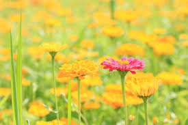

<meta charset="utf-8">
<script type="text/javascript">
  var i=10;
  while(i>8){ //(10>8)->참, (9>8)->참, (8>8)->거짓->while종료
    i--;  //9->8
	document.write(i,"<br>");  //9화면출력, 8화면출력
  }//while종료 위치

  //while : 조건이 만족되는 동안 실행되고 조건이 거짓이 되는 순간 while 종료!!
  var j=1;  //변수의 초기값 지정
  while(j<3){ //while(조건식){
   j++; //2, 3 증감식
   document.write(j,"<br>");//2, 3 실행문장
  }  
  
  var k=1;
  do{
     k++; //2 ->3
	 document.write(k,"<br>"); //2, 3
  }while(k<3) 
  //(2<3)->참->다시 do위치로 이동
  //(3<3)->거짓->do~while 종료됨
  
  //for(초기값;조건식;증감식){ 실행문장; }
  for(var k=1;k<3;k++){ 
      document.write(k,"<br>"); 
	  //k가 1일때 (1<3)->참->1출력->증감식 위치로 이동
	  //증감식 위치로 이동->k가 2가됨 (2<3)->참->2출력
	  //증감식 위치로 이동->k가 3가됨 (3<3)->거짓->for종료
	}//for 종료 위치!!
  
  //for문장을 활용하여 ★다섯개 출력
  for(var a=1;a<=50;a++){
     document.write("<span style='color:red;'>★</span>");
  }
  //1,3,5,7,9와 같은 숫자로 출력해보기(15일때까지)
  for(var su=1;su<=15;su+=2){
     document.write("<p>"+su+"</p>"); //1,3,5
  }
  
  //for문장을 활용하여 "♡"을 5개 출력(감소의 방식 활용)
  for(var h=5;h>0;h--){
     document.write("♡");
  }
  document.write("<br>");
  //이미지 크기의 넓이를 1%~10%증가 후 9%~1%로 감소하는 유형의 문장을 만드세요(for문 활용)
  /*
   
   
   
   
   
   
   
   
   
   
   ★변하는 숫자 부분은 변수로 처리!!
 */ 
 for(var f=1;f<=10;f++){
    document.write("");
 }
 
 //이미지 크기의 넓이를 9%~1%로 감소하는 유형의 문장을 만드세요(for문 활용)
  /*
   
   
   
   
   
   
   
   
   
   ★변하는 숫자 부분은 변수로 처리!!
 */ 
 for(var f=9;f>=1;f--){
    document.write("");
 }
  
 </script>


